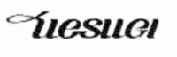
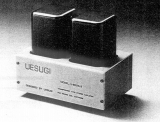
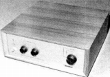
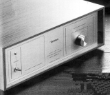

UESUGI（ウエスギ）
オーディオ評論家であり、アンプ回路設計者であった故 上杉佳郎氏が設立した、真空管式アンプを中心とするブランド。1970年代から活動しており、カートリッジやアームなどは扱わないが、70年代末のMC型カートリッジの一般化以降は、アナログ再生に必要な製品を用意してきた。MC型カートリッジ対応としては、一貫としてトランスによる昇圧を推奨しており、1988年よりイコライザーアンプも扱っているが、MM対応機である。
�T.昇圧トランス・イコライザーアンプ

(U・BROS-5/Type L)（昇圧トランス） U・BROS-5/Type H U・BROS-5/Type L
 
（イコライザーアンプ） UTY-6 UTY-7 U・BROS-20